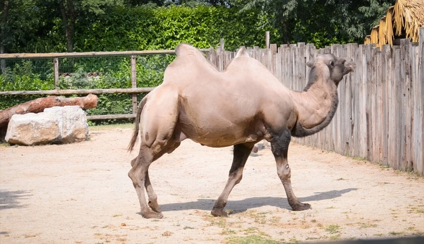

W1/Q1 (DAVIS-NewTraj: trajectories authored independently of the source videos)
Inputa DAVIS first frame

Input imageinput image (first frame)
Source videosource video: its motion is not used
180° object turnstatic camera
Trajectorystatic camera
Camera orbitaround a static object
Trajectory−120°
Trajectory+120°
Trajectory−180°
Trajectory+180°
Object translation±3 body widths, following camera
Trajectory−3 body widths
Trajectory+3 body widths
DAVIS-NewTraj: 61 trajectories on DAVIS first frames, specified independently of the source videos, in the nine types (examples above, on one first frame, in its point cloud). Without ground-truth videos, we evaluate camera control and recognition rate: 4Director 90.4% vs 86.7% for the strongest baseline.